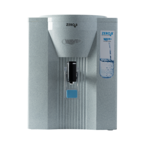
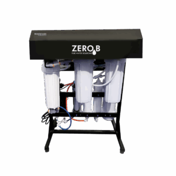
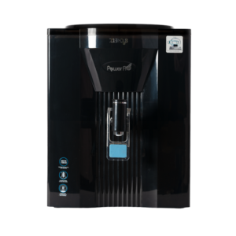
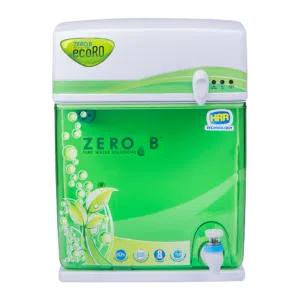
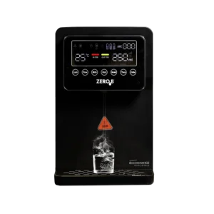
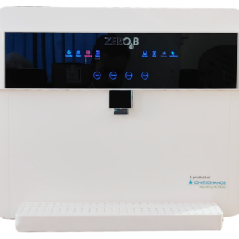
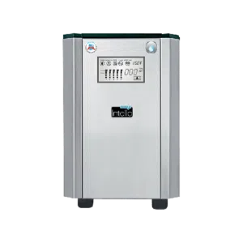
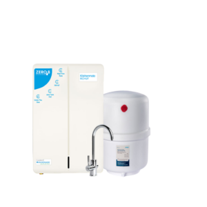
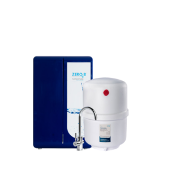

Wave Plus RO
A multi-stage RO purifier built to handle moderate-to-high TDS supply, giving consistent drinking water quality without over-purifying and wasting more than it needs to.
Reverse-osmosis purifiers matched to your TDS reading — from wall-mounted units for offices to compact under-the-sink models for apartment kitchens, all sized against your actual source water.
Model names and photos below are drawn from the ZeroB catalogue — descriptions are general until we confirm exact TDS range and capacity for your source water. Tap WhatsApp on any model to ask.

A multi-stage RO purifier built to handle moderate-to-high TDS supply, giving consistent drinking water quality without over-purifying and wasting more than it needs to.

A skid-mounted RO system built for higher daily output, suited to offices, small institutions and larger households that draw drinking water from a shared point.

Purpose-built for high-TDS borewell water, this RO purifier is tuned to bring down dissolved solids that a standard purifier would struggle with.

A water-efficient RO purifier that recovers more of the input water than a conventional unit, aimed at households that want fewer litres wasted per litre purified.

Dispenses both hot and room-temperature purified water from one unit — a fit for kitchens that want instant hot water on tap alongside everyday drinking water.

A wall-mounted RO purifier rated at 50 litres per hour, built for the steadier daily draw you'd see in an office pantry or an institutional kitchen.

A 25-litre storage RO purifier that keeps purified water ready between draws, useful where the supply itself isn't always running.

A combined RO and UF purifier that tucks away under the counter, freeing up kitchen space while covering both dissolved solids and microbiological safety.

A second under-the-sink option in the Kitchenmate line, aimed at kitchens on municipal or Cauvery supply where full RO+UF isn't necessary.
We take a TDS reading from your actual source before recommending a model — matched to your consumption, not the biggest box we can sell you.